Desenhando Personagens
Maycon Guerra
Objetivos
- No mercado haverá o cliente
- Criar propostas / opções para a forma de seu personagem.
- Trabalhar de maneira rápida e sem muito custo.
- Ideias serão descartadas ao longo do processo.
- Agregar conhecimentos de anatomia que serão úteis na modelagem 3D

Não pare!
- O tubarão se parar de nadar morre por falta de oxigênio.
- Esse também é o segredo para manter o projeto fluindo.

Desenho de Personagem - Proporções
-
A proporção do corpo humano pode ser dada usando como medida a altura de uma cabeça.
-
Um adulto:
- Homem Adulto: 7.5
- Mulher Adulta: 6.5
-
Se não for realista não precisa seguir estas proporções
-


Desenho de Personagem - Corpo
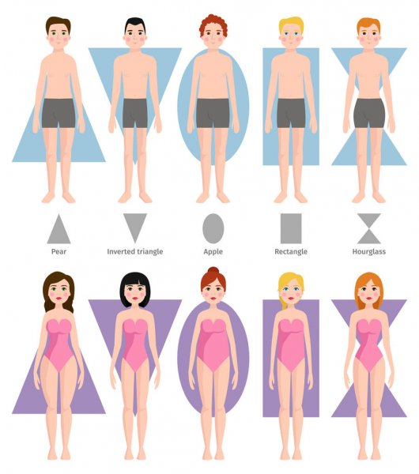
 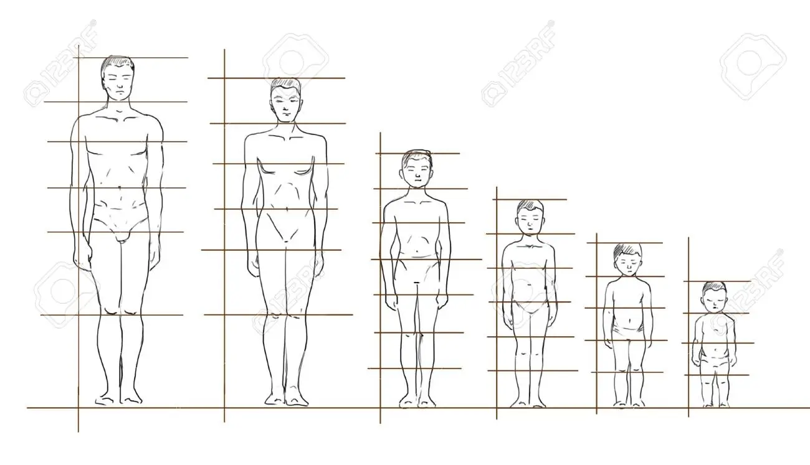
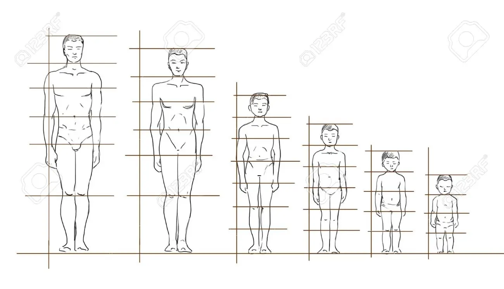
Pareidolia
-
Fenômeno psicológico comum nos humanos.
-
Reconhecer imagens em formas aleatórias.
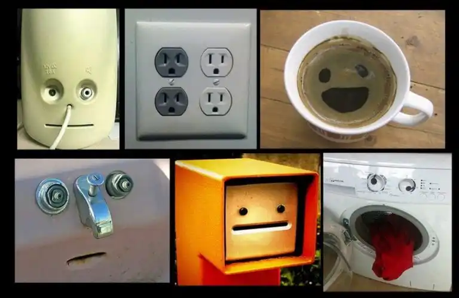
No Photoshop
- Definir propostas de formatos de corpo para os personagens.
- Imagem em tamanho 1920x1920 (200dpi) - para que possa ser impressa
- As partes do corpo devem estar separadas ( facilita o acabamamento ).
- Definir o tamanho da cabeça.
- Definir a proporção do corpo (de acordo com a cabeça).
- Camadas: cabeça, torso, quadril,braços e pernas.
Desenho de Personagem - Cabeça
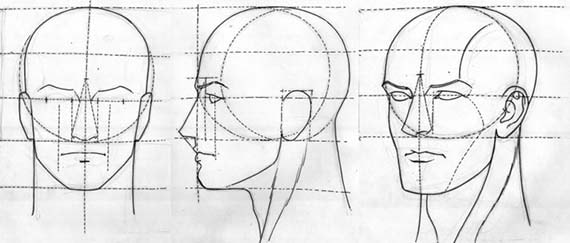
 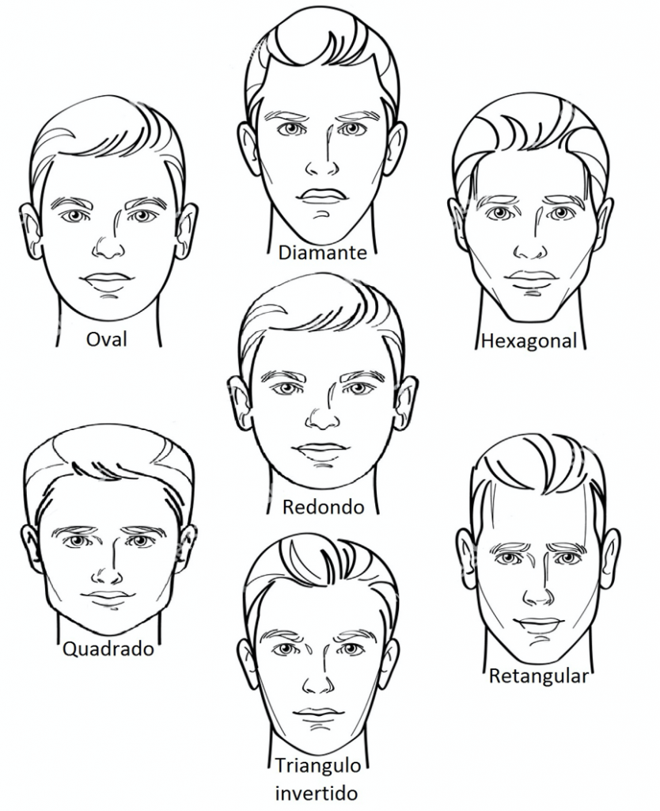
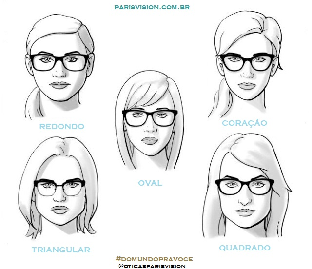
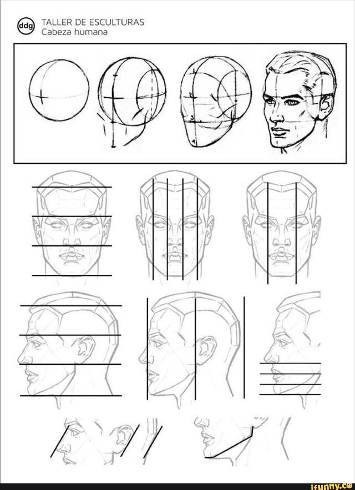
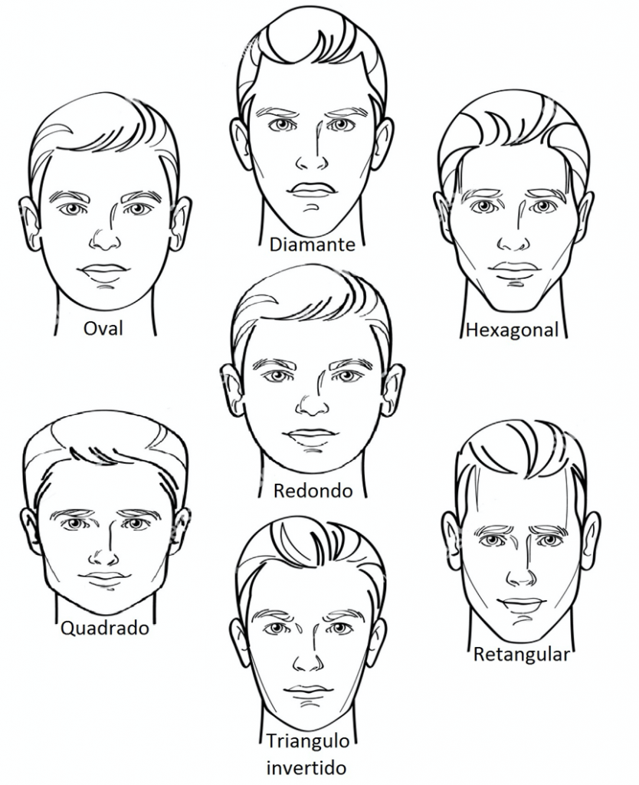
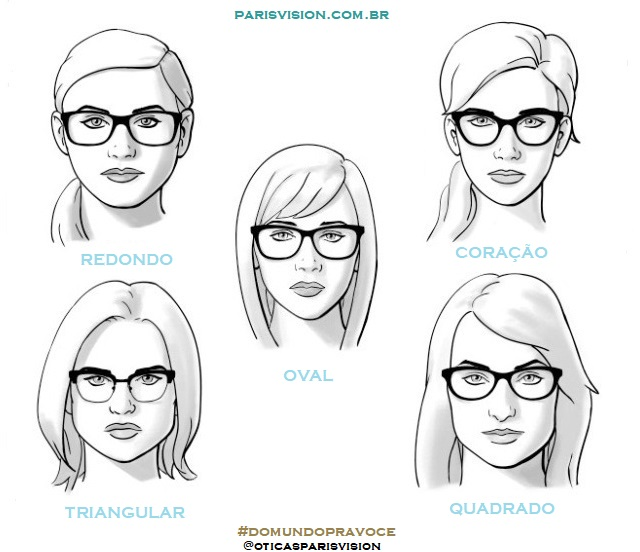
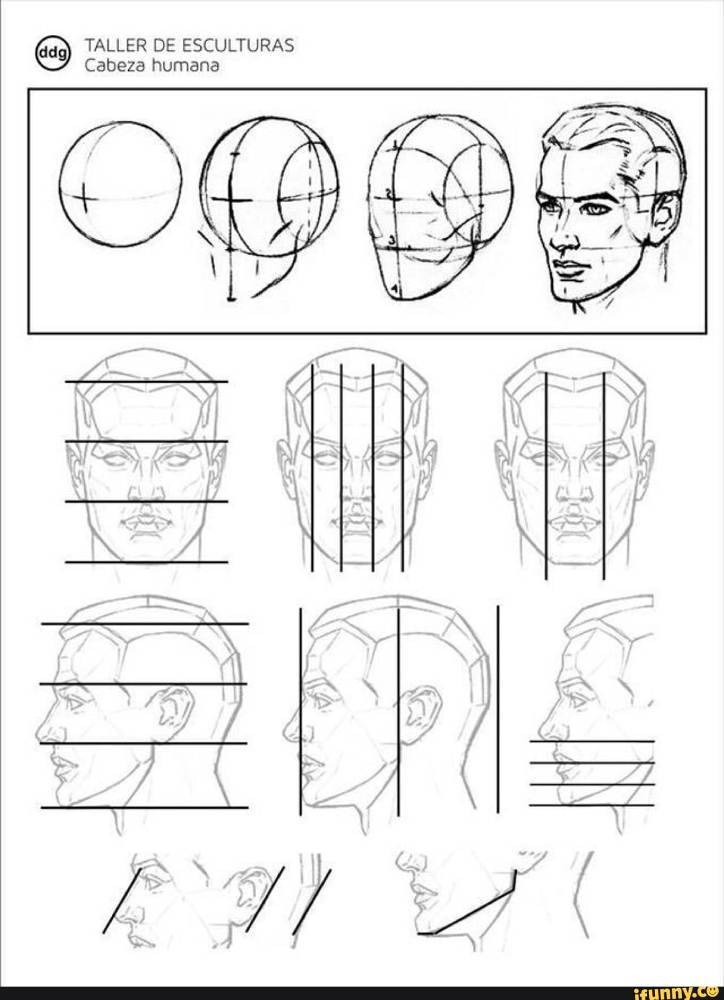
Desenho de Personagem - Formatos
Desenho de Personagem - Detalhes Rosto
 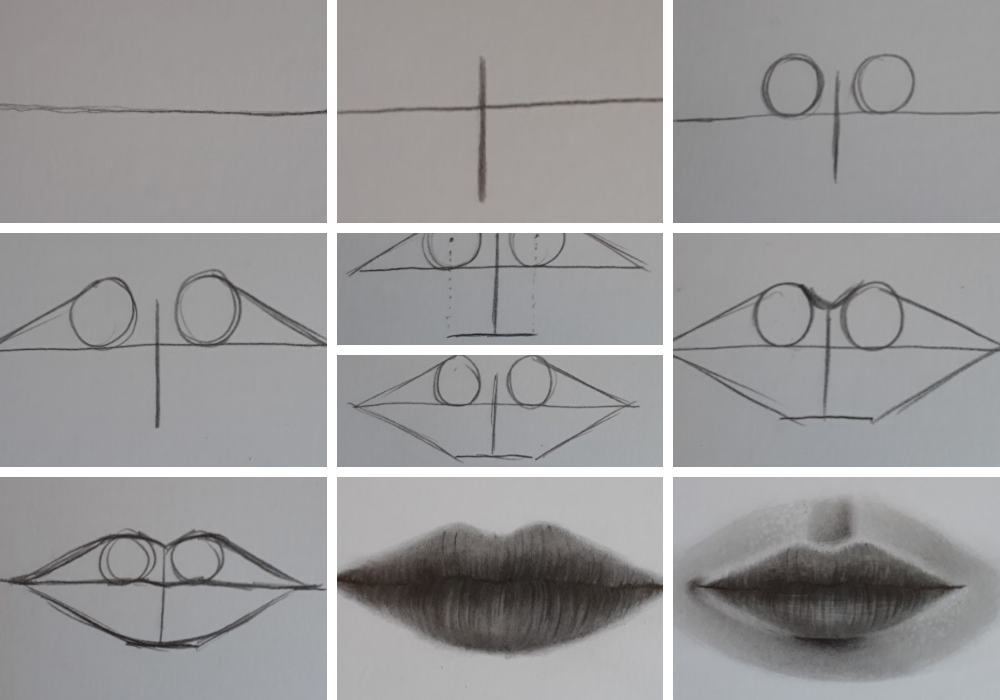
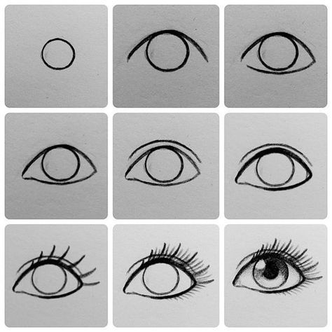
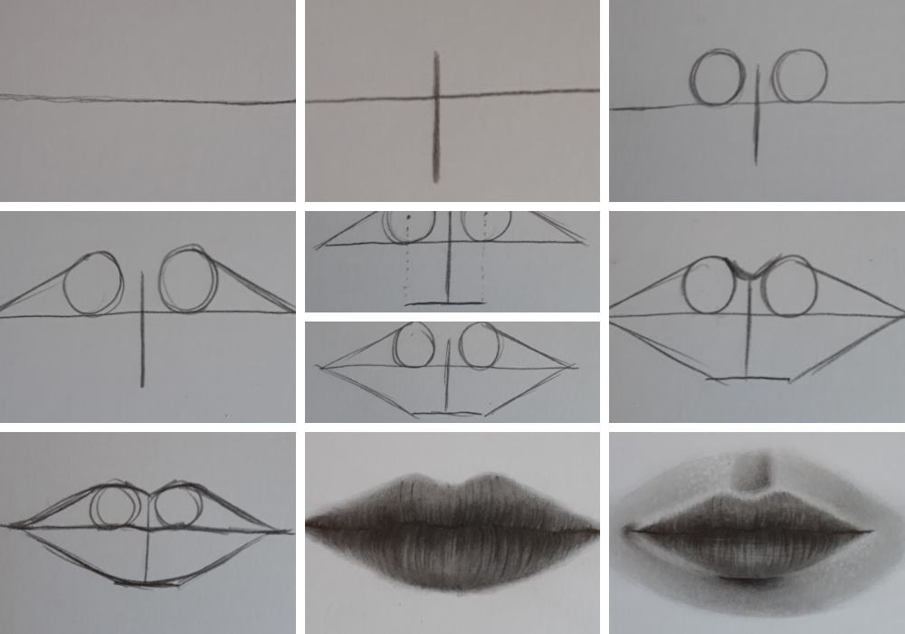
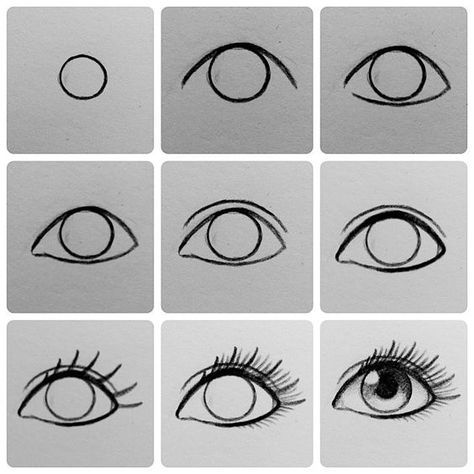
MudBox
-
Software de escultura digital
-
Simula argila digital
-
Como Zbrush, Blender, etc consegue lidar com malhas muito densas

high poly vs low poly
malha vs resolução
UVW